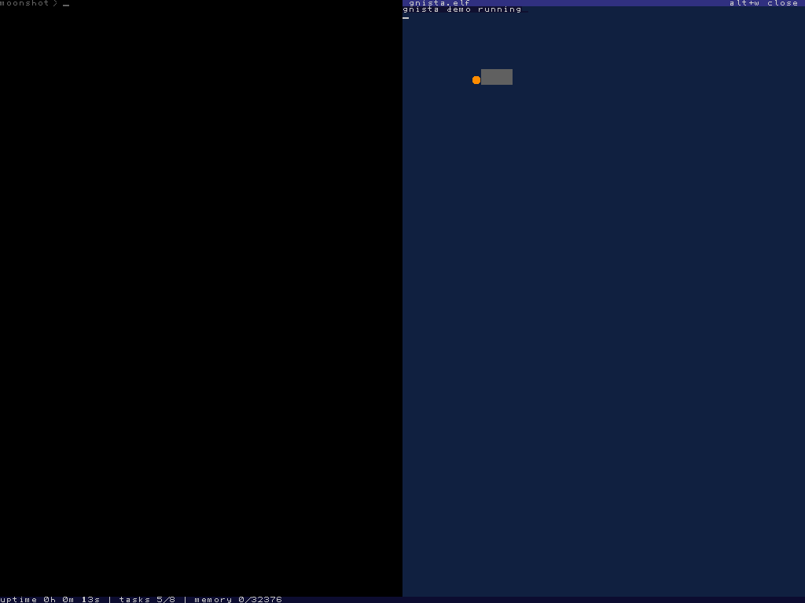

kakel
kakel puts more than one thing on the screen at once.the name is Swedish for "tile", matching exactly what it does. it divides punkt's single full-screen console into a tiled grid of rectangular windows (up to four visible at once, with the architecture supporting more in hidden rings), each with its own shell session.
layout
boot starts with one full-screen window above a one-row status bar. the
split command divides the screen step by step. a first split creates two
side-by-side windows, a second split adds a second row, and a third fills the final
slot for a 2×2 grid. the status bar is always present and full-width at the very
bottom, showing uptime, task count, and free memory. close removes the
focused window and collapses the layout back down, with a message if you try to close
the last one.
representation
a window is a set of entries in parallel arrays indexed by a window id, the same idiom chrone uses for its task table and jakel uses for its nodes, since c0 has no structs. geometry is stored in character cells, not pixels. every window is cell-aligned, which keeps the scroll's eight-byte row copies legal and lets the cursor code reuse punkt's cell-based drawing directly. each window records where it sits, how big it is, where its cursor is, and its own background colour. new windows cycle through a palette of six dark backgrounds so adjacent tiles are visually distinct without borders.
clipping
punkt's console wraps text at the screen edge and scrolls the whole screen. kakel does the same things per window. a line wraps at the window's right edge, and text running off the window's bottom scrolls that window alone, shifting only the pixel rows inside its own rectangle and leaving every neighbouring pixel exactly where it was.
focus
keyboard input goes to whichever window has focus. Alt+Tab cycles focus through occupied slots in reading order (left to right, top to bottom) and wraps around.the Tab is swallowed whole, a focus switch never types anything into the window it lands in. the cursor shows where focus is, bright in the focused window and dim everywhere else.
a cursor is a fine focus indicator right up until a window has no cursor. a graphical program draws pixels, not text, so it never places one, and for a while a tavla and a shell window could sit side by side looking equally focused with nothing on screen saying which one the keyboard was talking to. a tavla shows focus in its title strip instead, for exactly this reason.
one shell per window
each window boots into its own skalman session with its own line buffer. a half-typed command survives switching away and back, and a command's output lands in the window it was typed in. the shell prompt cannot be erased by backspacing past it.
ring-3 processes
when a ring-3 process is spawned via spawn3 or
spawn3 (file), kakel gives it its own window. the process's output, every
byte it writes through SYS_DEBUG_PRINT, lands in that window regardless
of which tile the user is focused on. this is what lets a ring-3 program run visibly
alongside the shell. the shell stays in its original window, the process gets the new
one, and Alt+Tab cycles between them as usual.
if the windowing layer is not active, a VGA-only boot for instance, the spawn still works, the output simply goes to the full-screen console instead, same as it always has.
tavla
a window is one of two kinds. the default is a shell window, a text console skalman owns and prompts into. the other is a tavla, the window a graphical ring-3 program gets. it is still an ordinary tile with the same geometry rules and the same Alt+Tab order, shown alongside the shell rather than taking over the screen. that is by design, and it is the reason a tavla is not a fullscreen mode, because a graphical program being able to talk to the shell is wanted later, and sealing the screen off would foreclose it.
a tavla carries a one-row title strip that kakel owns and the program cannot draw
over. the strip names the program, renders bright when the window has focus and dim
when it does not, and offers the way out, alt+w closes the focused tavla
and stops the program behind it.

the strip costs the program one character row, and the interesting part is where that subtraction happens. a tavla's stored rectangle is its client area, inset below the strip by the one function that hands out geometry. so every path that was already correct stays correct without knowing a strip exists. text output, per-window scrolling and all three of the ring-3 graphics calls keep using the same window rectangle they always did, and no program can address a pixel of its own title.
keys are the other difference. while a tavla has focus, every keystroke goes to its
program through the key ring buffer and neither the shell nor the editor sees it,
which is the point, but also a trap worth naming. alt+w and Alt+Tab are
checked before that routing and can never be swallowed, so a tavla can always be left
or closed no matter what the program does with input. a tavla whose program has
exited stops consuming keys entirely, but the window stays, showing the last frame it
drew, with the strip relabelled until it is closed.
exception
a kernel panic ignores the windows entirely and takes over the full display, because a fatal error should never be confined to a tile.